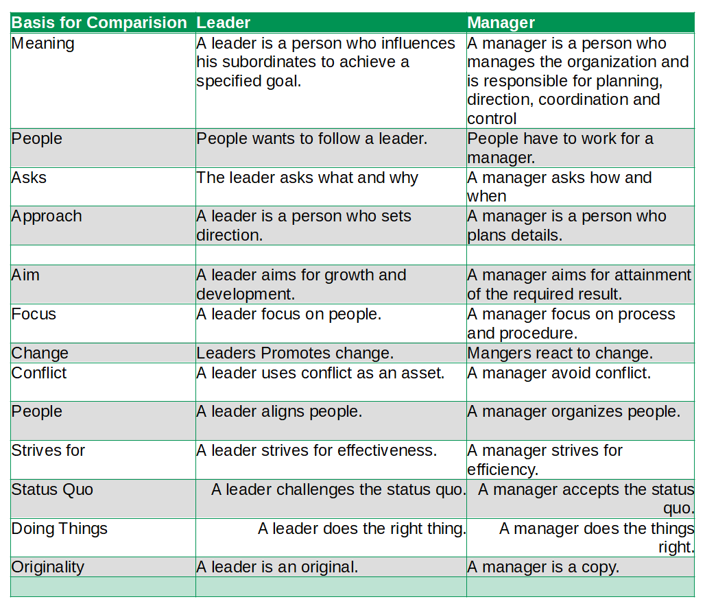

What is the main difference between manager and leader?
The main difference between manager and leader is People wants to follow a leader whereas People have to work for a manager.
| Basis for Comparision | Leader | Manager |
| Meaning | A leader is a person who influences his subordinates to achieve a specified goal. | A manager is a person who manages the organization and is responsible for planning, direction, coordination and control |
| People | People wants to follow a leader. | People have to work for a manager. |
| Asks | The leader asks what and why | A manager asks how and when |
| Approach | A leader is a person who sets direction. | A manager is a person who plans details. |
| Aim | A leader aims for growth and development. | A manager aims for attainment of the required result. |
| Focus | A leader focus on people. | A manager focus on process and procedure. |
| Change | Leaders Promotes change. | Mangers react to change. |
| Conflict | A leader uses conflict as an asset. | A manager avoid conflict. |
| People | A leader aligns people. | A manager organizes people. |
| Strives for | A leader strives for effectiveness. | A manager strives for efficiency. |
| Status Quo | A leader challenges the status quo. | A manager accepts the status quo. |
| Doing Things | A leader does the right thing. | A manager does the things right. |
| Originality | A leader is an original. | A manager is a copy. |
Leader
It is clear that leadership is pervasive and not just reserved for the appointed ones, Everyone can demonstrate leadership, whether it be as a parent, teacher, friend, team leader or organizational leader. Leadership defines what the future should look like, aligns people with that vision and inspires them to make it happen despite the obstacles. Leader is a person who, by word and/or by personal example, markedly influence the behaviours, thoughts and feelings of a significant number of their fellow human beings. Leadership is function of knowing yourself, having a vision that is well communicated, building trust, among colleagues, and taking effective action to realize your own leadership potential.
Manager
A manager is a person who manages the organization and is responsible for planning, direction, coordination and control. When managers are relationally cometent they inspire a willingness to cooperate. People feel valued and good about themselves. I have heard people say they would do practically anything for this type of manager. In a team where a more collborative apprach prevails, people feel more committed, and creativity can flourish.
Difference Between leader and manager on the basis of Meaning
A leader is a person who influences his subordinates to achieve a specified goal whereas A manager is a person who manages the organization and is responsible for planning, directing, coordination, and control.
Difference Between leader and manager on the basis of People
People wants to follow a leader whereas People have to work for a manager.
Difference Between leader and manager on the basis of Ask
The leader asks what and why but A manager asks how and when.
Difference Between leader and manager on the basis of Approach
A leader is a person who sets direction whereas A manager is a person who plans details.
Difference Between leader and manager on the basis of Aim
A leader aims for growth and development whereas A manager aims for attainment of the required result.
Difference Between leader and manager on the basis of Focus
Leader focus on people whereas A manager focus on process and procedure.
Difference Between leader and manager on the basis of Change
Leaders Promotes change whereas Mangers react to change.
Difference Between leader and manager on the basis of Conflict
A leader uses conflict as an asset whereas A manager avoid conflict.
Difference Between leader and manager on the basis of Strives for
A leader strives for effectiveness whereas A manager strives for efficiency.Difference Between leader and manager on the basis of Meaning